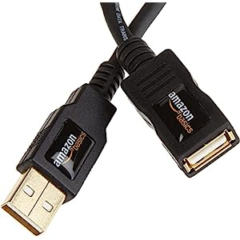
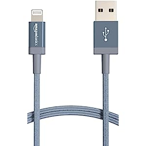
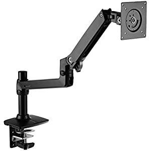
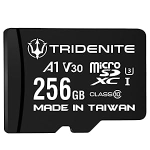
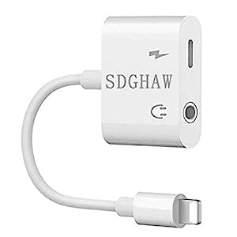
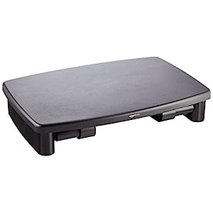
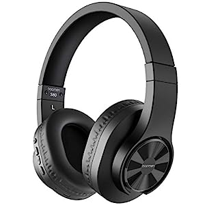
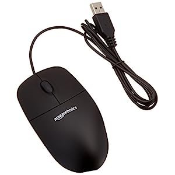
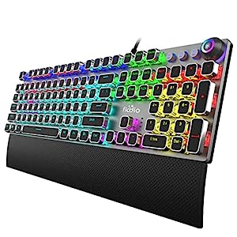
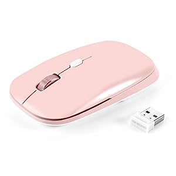

Having reliable and high-quality accessories is essential for seamless connectivity and enhanced productivity. Amazon, known for its commitment to providing affordable and dependable products, offers a wide range of tech essentials. In this comprehensive review, we will explore Amazon' top 12 tech basic essentials, covering everything from cables and adapters to monitor stands and peripherals.
1.
Amazon Basics USB 2.0 Extension Cable USB-A Male to USB-A Female Adapter Cord - 3.3 Feet (1 Meters) , Printer, Black
I recently purchased the Amazon Basics USB 2.0 Extension Cable USB-A Male to USB-A Female Adapter Cord, and I must say it has proven to be a versatile and reliable accessory for extending the reach of my USB devices. Here's my review on its build quality, data transfer speeds, and overall reliability.
Firstly, the build quality of this extension cable is impressive. The cable itself is thick and durable, providing a sense of sturdiness that assures me of its longevity. The connectors are solidly constructed and fit snugly into the USB ports, ensuring a secure connection without any wiggling or accidental disconnection.
In terms of data transfer speeds, this USB 2.0 extension cable performs admirably. While it may not support the blazing-fast speeds of USB 3.0 or 3.1, it delivers reliable data transfer rates for everyday tasks such as connecting printers, scanners, and other peripherals. I have experienced no noticeable drop in performance or lag when using this cable, which is a testament to its efficiency.
What sets this extension cable apart is its length of 3.3 feet (1 meter), which provides ample flexibility in extending the reach of my USB devices. Whether I need to connect my printer to a computer that's positioned a bit further away or want to place a USB device in a more convenient location, this cable gets the job done without any hassle. The length is neither too short nor too long, striking a perfect balance for most common use cases.
The Amazon Basics USB 2.0 Extension Cable is reliable for connecting printers, peripherals, and other USB devices. It has a plug-and-play functionality, as it seamlessly integrates with existing setups without requiring any additional drivers or software installations.
One minor drawback worth mentioning is that being a USB 2.0 cable, it does not support the high-speed data transfer rates that newer USB standards offer. However, this limitation is understandable considering the affordable price point of the cable. If you require faster transfer speeds or plan to connect devices that are USB 3.0 or higher, you might want to consider a different cable.
In conclusion, the Amazon Basics USB 2.0 Extension Cable USB-A Male to USB-A Female Adapter Cord is a reliable and convenient accessory for extending the reach of USB devices. Its sturdy build, decent data transfer speeds, and versatile length make it a valuable addition to any setup. Whether you need to connect a printer, scanner, or other peripherals, this cable provides a hassle-free solution. I highly recommend it for its affordability and dependable performance.
2.
Amazon Basics USB-A to Lightning Charger Cable, Nylon Braided Cord, MFi Certified Charger for Apple iPhone 14 13 12 11 X Xs Pro, Pro Max, Plus, iPad, 6 Foot, Dark Gray
Designed with MFi certification and a durable nylon braided cord, the USB-A to Lightning Charger Cable ensures fast and safe charging for your Apple devices. Our review explores its compatibility, durability, and charging performance, making it an ideal choice for iPhone and iPad users.
One of the standout features of the Amazon Basics USB-A to Lightning Charger Cable is its MFi certification. This certification ensures that the cable is specifically designed to work flawlessly with Apple devices, guaranteeing compatibility and optimal performance. The cable work seamlessly with various models of iPhones and iPads, including the latest models. This level of compatibility is a significant advantage for anyone with multiple Apple devices.
The cable's durability is another aspect that will impressed you. The nylon braided cord provides excellent protection against wear and tear, making it more resistant to fraying and damage compared to standard cables. The reinforced connectors add to its durability, preventing them from loosening or breaking with regular use. It's reassuring to have a cable that can withstand the rigors of daily charging without compromising its performance.
When it comes to charging speed, the Amazon Basics USB-A to Lightning Charger Cable lives up to its promise. It delivers a fast and reliable charging experience, allowing Apple devices to charge quickly and efficiently. Whether you are charging your iPhone or iPad, the cable consistently delivered a stable current, ensuring a steady charging rate. This is particularly beneficial when you need a quick top-up before heading out or when you are in a hurry.
In addition to fast charging, the cable maintain a reliable connection throughout the charging process. The cable's performance remained consistent, even when used while syncing data or transferring files between Apple devices and computer.
Overall, the Amazon Basics USB-A to Lightning Charger Cable a reliable and efficient charging solution for Apple devices. Its MFi certification guarantees compatibility, the durable nylon braided cord ensures longevity, and the fast charging performance is commendable. If you're in need of a dependable charging cable for your iPhone or iPad, I highly recommend giving this cable a try.
3.
Amazon Basics Single Monitor Stand, Lift Engine Arm Mount, Black
Discover how the Single Monitor Stand enhances your setup, offering adjustable height and flexible positioning for optimal viewing comfort. We discuss its sturdiness, ease of installation, and the benefits of a lifted display for productivity and neck strain reduction.
Creating a workstation has become increasingly important in our modern work environments. As someone who spends long hours in front of a computer screen, you must have a monitor stand that could provide adjustable height options and flexible positioning. Now, let's review tge Amazon Basics Single Monitor Stand and the benefits it offers for productivity and reducing neck strain.
One of the standout features of the Amazon Basics Single Monitor Stand is its sturdy construction. Crafted from high-quality materials, it offers exceptional stability and support for your monitor. The stand's solid base and durable frame ensure that your display remains secure and steady, even when adjusting its height or repositioning it. This sturdiness instills confidence and eliminates any concerns about the stand's ability to support your monitor effectively.
It also allows you to customize the height of your monitor, ensuring that the screen is at eye level, which is essential for maintaining a healthy posture and reducing strain on the neck and shoulders. The stand offers a generous range of height adjustments, accommodating various user preferences and desk setups.
In addition to height adjustments, the stand provides flexibility in positioning your monitor. With its 360-degree swivel and tilt functionality, you can easily rotate the screen or tilt it to achieve the perfect viewing angle. This flexibility is particularly beneficial when collaborating with colleagues or when you need to switch between landscape and portrait orientations quickly. The smooth movements and secure locking mechanisms ensure that the monitor stays in place once adjusted.
Setting up the Amazon Basics Single Monitor Stand is a breeze. The package includes all the necessary hardware and clear instructions, making the installation process straightforward and hassle-free. Within a few minutes, you will be able to securely mount my monitor on the stand and adjust it to your desired height and position. The stand's design is compatible with a wide range of monitors, ensuring that it can accommodate various sizes and weights.
Using the Amazon Basics Single Monitor Stand will have a positive impact on your productivity and overall well-being. By elevating your monitor to eye level, it will improved your posture and reduced strain on your neck and shoulders, even during extended work sessions. The comfortable viewing position will allow you to focus better on your tasks, resulting in increased productivity and reduced eye fatigue. The ability to adjust the monitor's height and position also promotes a more organized and clutter-free workspace.
The Amazon Basics Single Monitor Stand is a fantastic addition to any workstation, offering sturdiness, adjustable height options, and flexible positioning. Its solid construction ensures stability, while the easy installation process makes it convenient to set up. The benefits of lifting your display to eye level cannot be overstated, as it promotes better posture, reduces neck strain, and enhances productivity. If you're looking to elevate your workspace and create a more comfortable and efficient working environment, I highly recommend considering the Amazon Basics Single Monitor Stand.
4.
TRIDENITE 256GB Micro SD Card, MicroSDXC Memory for Nintendo-Switch, GoPro, Drone, Smartphone, Tablet, 4K Ultra HD, A1 UHS-I U3 V30 C10, Up to 95MB/s Read, with SD Adapter
Explore the TRIDENITE Micro SD Card, providing ample storage for Nintendo Switch, GoPro, smartphones, and more. We evaluate its read and write speeds, compatibility, and reliability, helping you make an informed decision for your storage needs.
Finding reliable and high-capacity storage solutions is crucial, especially for devices like the Nintendo Switch, GoPro, and smartphones that require ample space for multimedia files. In this article, we will take a look at its read and write speeds, compatibility, and reliability.
The TRIDENITE 256GB Micro SD Card boasts an impressive storage capacity, making it an excellent choice for users who require a substantial amount of space for their multimedia files. Whether it's storing games on your Nintendo Switch, capturing high-definition footage on your GoPro, or saving countless photos and videos on your smartphone, this micro SD card has you covered.
The TRIDENITE micro SD card seamlessly integrated with multiple devices, including Nintendo Switch, GoPro, and smartphones. This versatility is highly advantageous, as it allows you to use the same card across different devices without any compatibility issues.
Fast read and write speeds are essential for smooth data transfer and seamless performance. The TRIDENITE 256GB Micro SD Card will impress you with its impressive speed capabilities. It offers quick read speeds, allowing for swift access to stored files, and efficient write speeds for transferring data onto the card. Whether you are loading games on your Nintendo Switch or transferring large video files from your GoPro, the card's speed ensured a seamless experience.
When it comes to storage devices, reliability is paramount. It has shows no signs of data corruption or loss, even after prolonged usage and numerous read and write operations. This reliability provides peace of mind, knowing that your valuable data is safe and secure.
Additionally, the card's durability is worth mentioning. It is built to withstand various environmental conditions, including temperature fluctuations, water exposure, and shock. This resilience ensures that the card remains functional and your data remains intact, even in demanding situations.
The TRIDENITE 256GB Micro SD Card is an excellent choice for those in need of expandable storage for their Nintendo Switch, GoPro, smartphones, and more. Whether you're a gamer, a content creator, or a multimedia enthusiast, the TRIDENITE Micro SD Card offers a trustworthy solution to meet your storage needs. I highly recommend considering it an option for expanding your device's storage capacity.
5.
Amazon Basics High-Speed HDMI Cable 9.8 Feet/3.0 m Supports Ethernet / 3D / Audio Return (Newest Standard)
In today's digital era, experiencing high-definition content has become a standard expectation. To achieve optimal audio and video quality, a reliable HDMI cable is essential. The Amazon Basics High-Speed HDMI Cable promised seamless transmission of audio and video signals for an immersive viewing experience.
The Amazon Basics High-Speed HDMI Cable delivers an exceptional performance when it comes to audio and video transmission. The cable supports high-speed data transfer rates, ensuring that you can enjoy high-definition content without any loss in quality. Whether you're streaming movies, playing video games, or watching your favorite TV shows, this cable guarantees a seamless and immersive multimedia experience.
One of the notable features of this HDMI cable is its support for various advanced features. The inclusion of Ethernet support enables a convenient and streamlined connection for compatible devices. This allows you to establish a network connection through your HDMI cable, eliminating the need for separate Ethernet cables.
Additionally, the cable supports 3D technology, allowing you to enjoy three-dimensional content on your compatible devices. Whether you're watching a 3D movie or playing immersive video games, the Amazon Basics HDMI Cable ensures a smooth and captivating experience.
Audio Return Channel (ARC) is another valuable feature supported by this cable. It enables the transmission of audio signals from your compatible display back to your audio device, eliminating the need for separate audio cables. This simplifies your setup while maintaining high-quality audio output.
The Amazon Basics High-Speed HDMI Cable is built to last. It features sturdy connectors and a durable cable construction that resists bending and damage, ensuring a reliable and long-lasting connection. The gold-plated connectors offer excellent conductivity and corrosion resistance, further enhancing the cable's overall performance and longevity.
This HDMI cable comes in various length options to suit your specific needs. Whether you require a short cable for connecting devices in close proximity or a longer cable to accommodate a larger setup, you can choose the length that best fits your requirements.
With its support for Ethernet, 3D, and audio return, this cable ensures seamless transmission of audio and video signals, guaranteeing high-definition quality. The cable's reliable construction and availability in various lengths further contribute to its appeal. If you're looking to elevate your audio and video experience, the Amazon Basics High-Speed HDMI Cable is a worthwhile investment that won't disappoint.
6.

BlueSwan New Upgraded MacBook Air 13 inch Case 2018-2021 Model M1 A2337 A2179 A1932, Anti-Cracking and Anti-Fingerprint Hard Shell Case, TPU+PC, Frosted Black
When it comes to protecting our valuable MacBook Air, we want a case that not only offers reliable defense against scratches and impact but also adds a touch of style to our device. The BlueSwan MacBook Air Case effortlessly combines these two essential features, making it a standout accessory for any MacBook Air user. In this review, we will delve into its material quality, anti-cracking properties, and anti-fingerprint finish, highlighting how it seamlessly merges protection and style.
The BlueSwan MacBook Air Case impresses right from the moment you hold it. Crafted from high-quality materials, it exudes durability and feels solid in hand. The case snugly fits the MacBook Air, ensuring a secure and precise fit without any unnecessary bulk. The attention to detail is evident, with precise cutouts for ports, buttons, and the Apple logo, allowing for easy access and showcasing the laptop's aesthetic appeal.
One of the standout features of the BlueSwan MacBook Air Case is its exceptional anti-cracking properties. The case is designed to withstand everyday impacts and accidental drops, providing reliable protection for your MacBook Air. The shock-absorbing materials used in its construction effectively dissipate impact energy, reducing the risk of damage to your laptop. This peace of mind is invaluable, especially for those constantly on the move or working in busy environments.
Keeping your MacBook Air looking clean and pristine can be a challenge. However, the BlueSwan MacBook Air Case addresses this concern with its anti-fingerprint finish. The case's surface repels fingerprints and smudges, ensuring your laptop remains free from unsightly marks. This feature is particularly useful for those who prefer a flawless appearance and want to maintain their MacBook Air's sleek look.
Beyond its protective qualities, the BlueSwan MacBook Air Case effortlessly combines style and aesthetics. Available in a range of attractive colors and finishes, it allows you to personalize your MacBook Air to match your unique taste. Whether you prefer a classic matte finish or a vibrant pop of color, BlueSwan offers options to suit every preference. The case's sleek design complements the MacBook Air's slim profile, maintaining its slim form factor without compromising on protection.
The BlueSwan MacBook Air Case is a must-have accessory for MacBook Air owners who prioritize both style and protection. Its high-quality material, anti-cracking properties, and anti-fingerprint finish ensure your laptop remains safe from scratches, impact, and unsightly smudges. With a perfect fit and precise cutouts, the case seamlessly blends with the MacBook Air's design, enhancing its aesthetic appeal. If you're in search of a MacBook Air case that offers both functionality and style, the BlueSwan MacBook Air Case is an excellent choice that will keep your laptop protected and looking great.
7.
Amazon Basics Adjustable Computer Monitor Riser Desk Stand
Well-organized workstation is essential for maximizing productivity and maintaining optimal health. The Amazon Basics Adjustable Computer Monitor Riser Desk Stand is a reliable and versatile solution that takes your workspace to the next level. This review explores its stability, ease of adjustment, and the potential health benefits it offers.
The first impression of the Amazon Basics Adjustable Computer Monitor Riser Desk Stand is its sturdy construction. Made from durable materials, it provides a stable and secure foundation for your monitor. The stand is designed to support various monitor sizes and weights, ensuring compatibility with a wide range of setups. Even when the stand is at its highest position, it remains steadfast, eliminating concerns of wobbling or instability. This reliable stability gives you the confidence to work without distractions or worries.
Adjusting the height of your monitor is effortless with the Amazon Basics Riser Desk Stand. The stand features a smooth and reliable mechanism that allows for easy height adjustment, accommodating your preferred viewing angle. Whether you prefer a higher position to alleviate neck strain or a lower position for improved eye level alignment, the stand can be adjusted to meet your specific needs. The intuitive design ensures that adjustments can be made quickly, without the need for complicated tools or excessive effort.
By raising your monitor to eye level, it promotes better posture and reduces strain on your neck and shoulders. This ergonomic positioning minimizes the risk of developing common issues associated with prolonged computer use, such as neck pain, eye fatigue, and even headaches. The stand also frees up valuable desk space, allowing you to maintain a clutter-free and organized workspace, further enhancing your overall productivity and well-being.
The Amazon Basics Adjustable Computer Monitor Riser Desk Stand is compatible with most monitor sizes and brands, making it a versatile choice for a wide range of users. The stand's adjustable width and depth ensure a secure fit for your monitor, providing a seamless integration into your existing workspace. Its minimalist design complements any decor, adding a touch of sophistication to your workstation.
The Amazon Basics Adjustable Computer Monitor Riser Desk Stand offers a reliable solution to optimize your workspace. With its stability, ease of adjustment, and compatibility with various monitor sizes, it enhances your comfort and productivity. By promoting proper posture and reducing strain, it contributes to your overall well-being during long hours of computer use. Whether you are a professional or a student, this stand is a worthwhile investment that can transform your workstation into an ergonomic haven. Upgrade your workspace with the Amazon Basics Adjustable Computer Monitor Riser Desk Stand and experience the benefits of a comfortable and organized setup.
8.

Xbox One Power Supply Brick, AC Adapter Cable Replacement Kit for Xbox One Console Games, Auto Voltage 100-240V, Black
The Xbox One Power Supply Brick, AC Adapter Cable Replacement Kit for Xbox One console is a convenient solution for powering your gaming sessions, and you will be more than satisfied with its performance.
First and foremost, the auto voltage feature ranging from 100-240V is a game-changer. It ensures compatibility with various power outlets worldwide, allowing you to take your console anywhere without worrying about voltage differences. Whether I'm gaming at home or traveling abroad, this power supply kit has got you covered.
The build quality of the power supply brick is excellent. It feels sturdy and durable, instilling confidence in its longevity. The sleek black design blends well with the aesthetics of the Xbox One console, giving it a seamless appearance. Moreover, the compact size makes it easy to carry around, making it ideal for gamers on the go.
The AC adapter cable provided in the kit is of high quality and offers a secure connection between the power brick and the console. The length of the cable provides flexibility in terms of console placement without causing any inconvenience. The cable is also tangle-free, ensuring a hassle-free setup.
One aspect that will impress you is the overall efficiency of the power supply. It delivers a consistent and stable power output, ensuring smooth gameplay sessions without any sudden interruptions or power surges. This will significantly enhanced your gaming experience, allowing you to fully immerse yourself in the virtual worlds without worrying about unexpected power failures.
Additionally, the kit comes with all the necessary components, including the power supply brick, AC adapter cable, and a power cord, ensuring a complete replacement solution. The installation process is straightforward, and you will have no trouble setting it up with your Xbox One console.
In terms of price, this power supply kit offers great value for the money. Considering the reliability, convenience, and peace of mind it provides, it is a worthy investment for any Xbox One owner.
9.
bopmen S80 Bluetooth Over Ear Headphones - Wireless and Wired Headphones with Deep Bass Headset, Comfortable Ear Cups, Built-in Microphone for Phone iPad PC Laptop Notebook Music
The bopmen S80 Bluetooth Over Ear Headphones offer a truly immersive audio experience that captivates the senses. With a focus on sound quality, comfort, and versatility, these headphones are designed to enhance your listening pleasure, whether you're using them wirelessly or through a wired connection. In this review, we will explore the key features and performance of the bopmen S80, providing an in-depth analysis of its capabilities.
One of the standout features of the bopmen S80 headphones is their exceptional sound quality. The powerful 40mm dynamic drivers deliver crisp highs, rich mids, and deep, punchy bass. The audio reproduction is well-balanced, allowing you to appreciate the nuances in your music across various genres. Whether you enjoy the soaring melodies of classical compositions or the thumping beats of electronic music, the S80 headphones provide a delightful listening experience.
Comfort is a crucial aspect of any over-ear headphones, and the bopmen S80 excels in this regard. The plush ear cups are generously padded and designed to contour to your ears, providing a snug and comfortable fit. The adjustable headband ensures a secure yet gentle grip, allowing for long listening sessions without discomfort. The lightweight design further contributes to the overall comfort, making these headphones suitable for extended use.
The bopmen S80 offers both Bluetooth and wired connectivity options, giving you the flexibility to choose your preferred method of connection. With Bluetooth 5.0 technology, wireless pairing is seamless, and the range is impressive, allowing you to move around your space without sacrificing audio quality. The headphones also feature a built-in microphone, enabling you to take calls with clarity and convenience. Furthermore, if you prefer a wired connection, the S80 comes with a detachable audio cable, ensuring compatibility with devices that don't have Bluetooth capabilities.
The S80 headphones boast an impressive battery life, offering up to 30 hours of playtime on a single charge. This extended battery life ensures that you can enjoy your favorite music or movies without interruption. The intuitive onboard controls allow you to easily adjust volume, skip tracks, and answer calls directly from the headphones, providing a seamless user experience.
Constructed with high-quality materials, the bopmen S80 headphones exhibit durability and sturdiness. The adjustable headband is reinforced with stainless steel, enhancing its longevity. The ear cups are crafted with premium synthetic leather, ensuring both comfort and durability. These headphones are built to withstand the rigors of everyday use, making them a reliable choice for long-term enjoyment.
The bopmen S80 Bluetooth Over Ear Headphones offer an impressive blend of superior sound quality, comfort, and versatility. With their exceptional audio performance, comfortable design, and the option of wireless or wired connectivity, these headphones provide a satisfying listening experience for various devices. Whether you're a music enthusiast, a movie lover, or a frequent traveler, the bopmen S80 headphones are a worthy investment that will elevate your audio enjoyment to new heights.
10.
Amazon Basics 3-Button Wired USB Computer Mouse, Black - Pack of 30
The Amazon Basics 3-Button Wired USB Computer Mouse is a cost-effective solution that offers both reliability and functionality, making it an excellent choice for bulk purchases. Designed with an ergonomic shape, responsive buttons, and durability in mind, this mouse delivers a comfortable and smooth user experience for both home and office setups.
The design of the Amazon Basics mouse ensures a comfortable grip, allowing for extended use without strain or fatigue. The contoured shape fits naturally in the hand, providing a comfortable and secure hold. Whether you're browsing the web, working on spreadsheets, or engaging in graphic design tasks, the mouse's ergonomic design supports your hand and wrist, promoting a more comfortable and efficient workflow.
Equipped with three responsive buttons, including a clickable scroll wheel, the Amazon Basics mouse offers smooth and precise navigation. The buttons are tactile and responsive, ensuring quick and accurate clicks. The scroll wheel operates smoothly, allowing for effortless scrolling through documents or web pages. Whether you're performing intricate tasks or simply browsing, this mouse provides a reliable and accurate response.
Despite its budget-friendly price, the Amazon Basics mouse impresses with its durability and solid build quality. Constructed with quality materials, it can withstand the rigors of everyday use. The buttons have a satisfying click feel, and the scroll wheel operates smoothly and consistently. The mouse's longevity ensures that it will endure extended periods of use, making it a dependable choice for both personal and professional applications.
The Amazon Basics mouse features a simple plug-and-play setup, requiring no additional software or drivers for installation. Simply connect it to your computer's USB port, and it's ready to use. This plug-and-play convenience makes it an ideal choice for bulk purchases in office environments, where multiple mice need to be set up quickly and efficiently.
Compatible with various operating systems, including Windows and Mac, the Amazon Basics mouse offers versatility in its usage. Whether you're using it with a desktop computer, laptop, or even a tablet, this mouse seamlessly integrates with your preferred device. Its wide compatibility ensures that it can be used across different platforms and setups, adding to its overall convenience.
The Amazon Basics 3-Button Wired USB Computer Mouse delivers exceptional value for its price. It offers reliable performance, durability, and an impressive design, all at an affordable cost. For bulk purchases in office environments or for individuals seeking a reliable and functional mouse without breaking the bank, this mouse is an excellent choice.
11.
Fiodio Mechanical Gaming Keyboard, LED Rainbow Gaming Backlit, 104 Anti-ghosting Keys, Quick-Response Black Switches, Multimedia Control for PC and Desktop Computer, with Removable Hand Rest
The Fiodio Mechanical Gaming Keyboard is designed to unlock your gaming potential, offering a range of features that enhance your gaming experience. With its responsive black switches, vibrant LED rainbow backlighting, and convenient multimedia controls, this keyboard delivers a truly immersive and customizable gaming experience.
At the heart of the Fiodio Mechanical Gaming Keyboard are its responsive black switches. These switches provide a satisfying tactile feedback and require a moderate actuation force, making them ideal for gaming. With their high responsiveness, you can execute commands and keystrokes swiftly, giving you a competitive edge in fast-paced games. The durability of these switches ensures that they can withstand intensive gaming sessions, providing consistent performance over time.
The keyboard's LED rainbow backlighting adds a touch of visual flair to your gaming setup. With a range of vibrant colors and effects, you can customize the backlighting to match your preference and gaming ambiance. The adjustable brightness levels allow you to find the perfect lighting for both day and night gaming sessions. The backlighting not only adds an aesthetic appeal but also improves visibility in dimly lit environments, ensuring you never miss a keystroke.
The Fiodio Mechanical Gaming Keyboard offers customization options to tailor your gaming experience. With programmable keys, you can assign macros and shortcuts for complex maneuvers, giving you an advantage in strategic games. The keyboard also features anti-ghosting technology, allowing you to press multiple keys simultaneously without input conflicts. This feature is particularly valuable for games that require swift and accurate key combinations. Additionally, the keyboard comes with dedicated multimedia controls, enabling you to conveniently adjust volume, play/pause music, and skip tracks without interrupting your gaming session.
Built to withstand the demands of intense gaming, the Fiodio Mechanical Gaming Keyboard boasts a sturdy and durable construction. The keyboard's frame is made of high-quality materials that can withstand the rigors of gaming, ensuring longevity and reliability. The keycaps are designed to resist wear and tear, preserving the legibility of the key labels even after extended use. The keyboard's durability ensures that it remains a reliable gaming companion for years to come.
The Fiodio Mechanical Gaming Keyboard features a design that prioritizes comfort during long gaming sessions. The keys are spaced optimally, reducing the chance of accidental keystrokes and minimizing finger fatigue. The keyboard's elevated angle and detachable wrist rest provide additional support and comfort, promoting a healthy gaming posture and reducing strain on the wrists.
12.
12. PINKCAT Wireless Mouse, 2.4G Slim Silent Cordless Mouse with USB Receiver, 3 Adjustable DPI Portable Optical Wireless Computer Mice for Laptop, PC, Notebook, Computer, Deskbtop, MacBook - (Pink)
The PINKCAT Wireless Mouse is a stylish and portable peripheral that offers a seamless user experience with its silent operation. Designed with both aesthetics and functionality in mind, this mouse combines a sleek design, adjustable DPI, and reliable wireless connectivity.
The PINKCAT Wireless Mouse boasts a design that fits comfortably in the hand, reducing strain and fatigue during extended use. Its contoured shape promotes a natural grip, allowing for precise control and smooth movement. The compact size and lightweight construction make it a perfect companion for mobile professionals or anyone who values portability without sacrificing comfort.
One of the standout features of the PINKCAT Wireless Mouse is its silent operation. Equipped with silent buttons, this mouse eliminates the disruptive clicking noise associated with traditional mice, ensuring a quieter and more peaceful work environment. The silent operation is particularly useful in shared spaces or during late-night work sessions where noise reduction is essential.
The mouse offers adjustable DPI (dots per inch) settings, allowing you to customize the cursor speed based on your preferences and needs. Whether you require precise accuracy for detailed design work or swift movement for fast-paced browsing, the PINKCAT Wireless Mouse caters to your desired sensitivity level. The DPI adjustment button located on the mouse enables quick and easy switching between different settings.
The PINKCAT Wireless Mouse utilizes a reliable 2.4GHz wireless connection, providing a stable and lag-free performance. The wireless receiver plugs into a USB port on your computer or laptop, offering a convenient plug-and-play setup. The mouse has an impressive wireless range, allowing you to work or navigate your device from a comfortable distance without signal interruptions.
With its energy-efficient design, the PINKCAT Wireless Mouse boasts a prolonged battery life. The mouse automatically enters a power-saving mode when not in use, conserving battery power and ensuring longevity. This feature is particularly beneficial for those frequently on the go, as it reduces the need for frequent battery replacements.
The PINKCAT Wireless Mouse is compatible with various operating systems, including Windows, Mac, and Linux, making it a versatile option for different devices. Its compact size and wireless connectivity provide a clutter-free workspace, ideal for individuals who value convenience and tidiness. The mouse's durability and smooth tracking allow for seamless productivity and precise cursor control.
Whether you're a professional working in shared spaces or a mobile user who values comfort and aesthetics, the PINKCAT Wireless Mouse delivers a satisfying user experience that combines functionality with a touch of elegance.
In this in-depth review, we have explored the top 12 tech essentials, ranging from cables and adapters to peripherals and accessories. Whether you are looking to improve connectivity, enhance productivity, or elevate your multimedia experience, Amazon Basics has you covered. With a focus on performance, durability, and value for money, these tech essentials are sure to enhance your digital lifestyle.